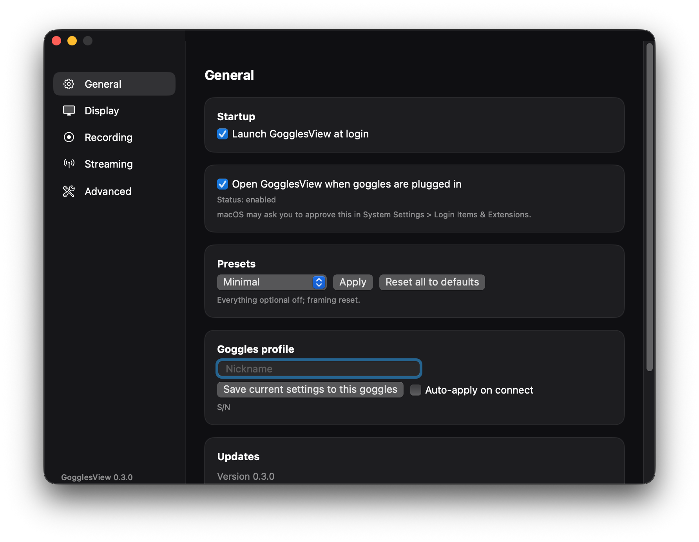

DJI Goggles 3 live view,
native on your Mac.
Plug in over USB-C and see what the goggles see. Record it, replay it, stream it. Free and open source, no extra hardware.
Apple Silicon, macOS 14 or later. Not notarized: right-click > Open the first time.

What it does
Everything runs locally. The goggles' H.264 stream is decoded once with VideoToolbox and shared by every window and output.
Full-rate live view
59/60 fps when the goggles send it, with an optional overlay for resolution, frame rate, bitrate, drops and latency.
Record anything
Lossless passthrough to .mov or .mp4, auto-start, auto-split, markers, a clip gallery with trim and share.
Instant replay
A rolling buffer you can save after the moment happens. Clips start cleanly thanks to a shared keyframe encoder.
Stream out
UDP MPEG-TS, RTMP for Twitch and YouTube, SRT, a local web viewer and NDI (experimental).
Live stabilization
Electronic shake removal that adds processing time but no frames of delay. Adjustable strength.
Color looks
Import .cube LUTs and apply them to the preview or to what you record and stream. Separate crop for output.
Made for OBS
A chrome-less capture window for Window Capture, keep-on-top, mini window, rotate and flip.
Automation
Menu-bar controls, global hotkeys, a gogglesview:// URL scheme and AppleScript.
Several goggles
Each pair gets its own window, profile and settings. Updates itself, with checksum and signature checks.


Get started
You need an Apple Silicon Mac, a DJI Goggles 3 and a USB-C cable that carries data.
- On the goggles open Settings > About and enable
OTG Wired Connection to Computer. Unplug before toggling, then reconnect. - Download the DMG, drag GogglesView to Applications and right-click > Open the first time.
- Approve the helper once in System Settings > General > Login Items & Extensions. It's what talks to the USB device.
- On the goggles start Share Liveview, pick your goggles in the app and you're live.
Questions
Is it really free?
Yes. It's GPL-3.0 and the source is on GitHub. There are no accounts, no ads and no analytics. The only thing it contacts on its own is GitHub, to check for updates (you can turn that off in Settings).
Why does macOS warn me when I open it?
Releases aren't notarized because that needs a paid Apple developer account. Right-click the app and choose Open once. The in-app updater verifies each update's checksum and code signature.
How much latency is there?
Measured with an on-screen stopwatch, about 130 to 170 ms glass to glass over USB. The app's own share is a few milliseconds. See the latency notes in the repository for the method.
Does it work with other DJI goggles?
It's built and tested on Goggles 3. Other models haven't been tried.
Intel Macs?
Only Apple Silicon has been tested.
Something doesn't work.
Open an issue on GitHub. Settings > Advanced has a diagnostics report you can attach.